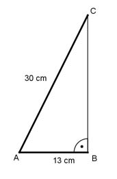

Aufgabe 311 Auf einen Kegel mit einem Grundkreisdurchmesser von 26 cm und einer Mantellinie von 30 cm ist eine Halbkugel aufgesetzt. Wie groß sind das Volumen V und die Oberfläche O des Körpers? Volumen = Kegel + Halbkugel л * r2 * h л * d3 V = ------------ + --------- 3 12 r = d/2 = 26 cm/2 = 13 cm

Satz von Pythagoras im Dreieck ABC: AC2 = AB2 + BC2 |-AB2 BC2 = AC2 - AB2 = 302 cm2 - 132 cm2 = 731 cm2 |√ BC = 27 cm = h л * 132 cm2 * 27 cm л * 263 cm3 V = ----------------------- + --------------- 3 12 V = 4 776 cm3 + 4 599 cm3 = 9 375 cm3 Oberfläche = Kegelmantel + Halbkugeloberfläche d2 * л O = л * r * s + --------- 2 262 cm2 * л O = л * 13 cm * 30 cm + --------------- 2 O = 1 225 cm2 + 1 061 cm2 = 2 286 cm2